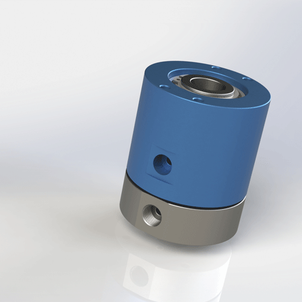

CNC rotary fixtures and indexing tables need reliable compressed air transfer for clamping, unclamping, pressure holding, and blow-off. Begapunk helps match passage count, flange layout, bore size, and RPM for machining automation.
When a CNC fixture rotates, the air line cannot be allowed to twist or pull on the actuator. A pneumatic rotary joint provides a sealed rotating path between the stationary supply and the moving fixture.
The most common design mistake is choosing by outside diameter only. Engineers should confirm pressure, flow, passage count, rotation speed, mounting face, and how the hose load will be supported.

Typical requirementFlange-mount or through-bore air rotary union for CNC fixture integration.Clamping pressure must remain stable during indexing and machining. Leakage can affect part positioning and process repeatability.
Check flange bolt pattern, shaft bore, anti-rotation support, and whether the rotary joint is exposed to chips or coolant mist.
| Fixture Area | Common Function | Selection Focus | Begapunk Direction |
|---|---|---|---|
| Rotary table center | Compressed air to rotating fixture | Flange mounting, pressure stability, hose support | BP-2P or BP-3P family |
| Large fixture plate | Multiple clamps and blow-off | More passages, larger bore, low leakage | BP-4P or custom multi-passage |
| Compact indexing jig | Single clamp or release line | Small size, threaded connection, easy installation | BP-1P or BP-2P compact model |
Send your fixture drawing, air circuit, pressure, RPM, and mounting space. Begapunk can suggest a standard model or design a custom interface.
Yes, if the model is correctly selected for pressure, seal condition, and hose loading. The fixture circuit should also include suitable pressure control.
Yes. For CNC fixtures, drawings are strongly recommended because mounting dimensions and port location usually decide the final model.